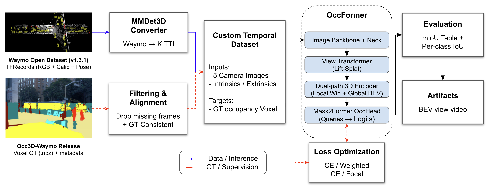
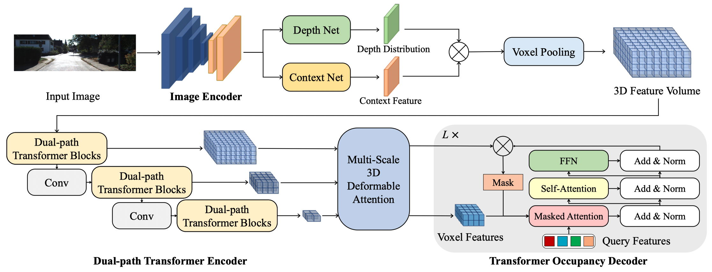
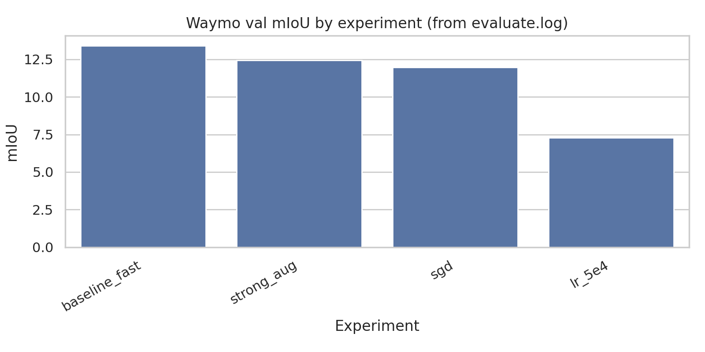
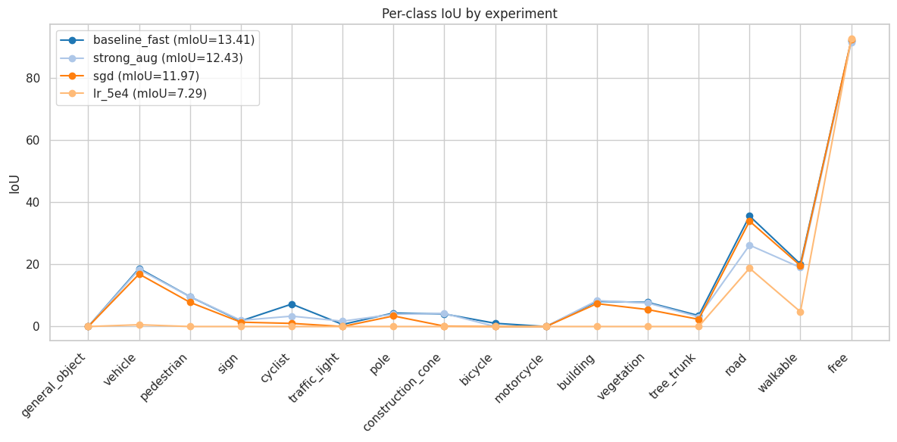
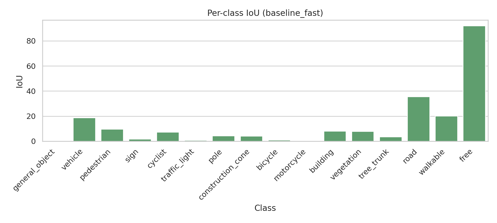

System architecture
The repo's pipeline spans data alignment, dataset hooks, training/evaluation, and artifact generation.
Source: reports/final_report/figures/system_architecture.png
Research portfolio · static GitHub Pages build
Camera-only 3D semantic occupancy on Waymo, adapted from OccFormer and hardened into a reproducible MMDetection3D pipeline under a single 12 GB GPU budget.
This portfolio page condenses the repo's report, configs, figures, and scripts into a single public-facing research case study with deterministic asset generation and static deployment.
A lightweight autoplay reel built from repo-backed report figures for GitHub Pages delivery.
Overview
The project turns a forked research codebase into a reproducible Waymo occupancy system. It packages the report's architecture, quantitative results, and engineering lessons into a static artifact that is easy to share, validate, and host on GitHub Pages.
reports/final_report/main.texprojects/configs/occformer_waymo/experiments.pyprojects/configs/occformer_waymo/waymo_base.pyreports/final_report/iou_result.csvMethod
The system lifts five synchronized camera views into a voxel-aligned 3D representation, runs dual-path 3D reasoning, and predicts a 16-class occupancy grid over Waymo scenes.

The repo's pipeline spans data alignment, dataset hooks, training/evaluation, and artifact generation.
Source: reports/final_report/figures/system_architecture.png

OccFormer's view transformation and 3D reasoning stack, reused as the backbone of the Waymo adaptation.
Source: reports/final_report/figures/occformer_framework.jpg
Results
The best completed baseline_fast run reached 13.41 mIoU on the validation split while operating on 10% data slices for practical iteration speed.

Completed runs show baseline_fast leading the available validation experiments.
Source: reports/final_report/figures/miou_by_experiment.png

Cross-experiment comparison highlights class imbalance and geometry sensitivity.
Source: reports/final_report/figures/per_class_all.png

The strongest completed run still shows the typical occupancy gap between common and rare classes.
Source: reports/final_report/figures/per_class_baseline_fast.png
| Experiment | mIoU |
|---|---|
| baseline_fast | 13.41 |
| strong_aug | 12.43 |
| sgd | 11.97 |
| lr_5e4 | 7.29 |
Engineering lessons
Most of the work was systems integration: data alignment, label remapping, voxel-grid mismatch repair, memory pressure reduction, and workflow stabilization on HPC nodes.
Swapped nuScenes-style assumptions for a Waymo/KITTI-compatible multiview loader so image tensors and metadata line up with the occupancy pipeline.
Corrected a silent two-camera pose mismatch that otherwise corrupts feature lifting without always crashing training.
Remapped Occ3D-Waymo free-space label 23 to the repo's class index 15 so supervision and evaluation agree.
Handled 200×200×16 ground truth against 256×256×32 model outputs with explicit resizing safeguards for training and visualization.
Reduced query counts, used faster presets, and documented failure modes caused by large [B,Q,H,W,D] occupancy tensors.
Reproducibility
The site build is deterministic: report figures are promoted into the site bundle, the hero reel is generated from repo-backed images, and validation is performed from the emitted manifest.
conda activate occformer307
export PYTHONPATH=$(pwd):$PYTHONPATH
sbatch scripts/run_experiment.sh baseline_fast
python tools/test.py projects/configs/occformer_waymo/waymo_base.py results/baseline_fast/model/latest.pth --eval mIoU --launcher none
python tools/build_portfolio_site.py --output-dir site
python tools/validate_portfolio_site.py --site-dir site --strict